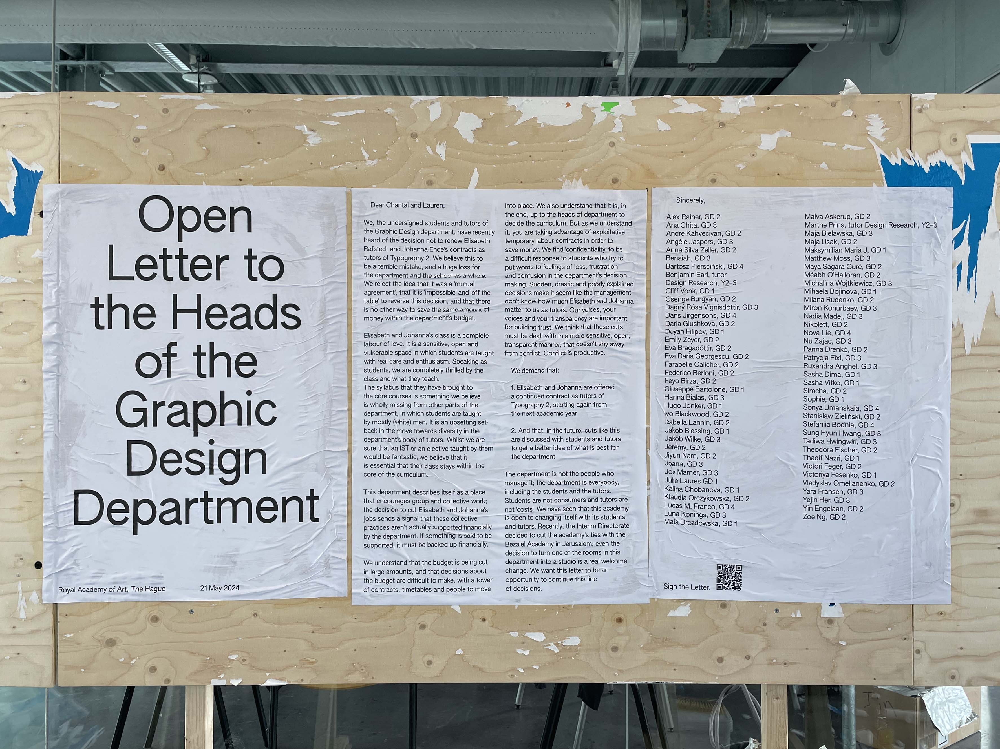

In our culturally diverse academy, the commitment, passion, and curiosity of our students and staff come together in a respectful and tolerant learning environment. Our intensive, structured and small-scale curriculum revolves around experimentation and personal guidance. We provide students with a significant degree of freedom to shape their interests and personal ambitions. We value skill and disciplinary expertise as well as interdisciplinary practice. We encourage innovation through collaboration and facilitate critical reflection on the ever-changing roles of artists and designers in our societies.
Our graduates have the capacity to become leaders in their fields, produce outstanding creative work, and dare to disturb. They are able to innovate, collaborate, and generate new knowledge. We inspire our students to question how art and design shape contemporary societies and contribute to cultural, economic, and social well-being in a global context.
Paulo Freire, Pedagogy of the Oppressed (Seabury Press, 1973), 73
Paulo Freire, Pedagogy of the Oppressed (Seabury Press, 1973), 83
Design is, like art, protean: its shape constantly changes. It is no coincidence that much of its specialised literature, rather than clarifying its nature, tries to direct its aims. Schools, as forges of currents and manifestos, actively participate in such an effort. This is of course reflected in the multiplicity of roles that the designer can perform: the charisma of the maestro, the kitsch of the star designer, the nostalgia of the craftsman, the pride of the expert and, increasingly, the struggle of the worker, can all converge within design.
Design is, like art, protean: its shape constantly changes. It is no coincidence that much of its specialised literature, rather than clarifying its nature, tries to direct its aims. Schools, as forges of currents and manifestos, actively participate in such an effort. This is of course reflected in the multiplicity of roles that the designer can perform: the charisma of the maestro, the kitsch of the star designer, the nostalgia of the craftsman, the pride of the expert and, increasingly, the struggle of the worker, can all converge within design.
Moten and Harney articulate the refusal at the heart of fugitive learning: "we refuse to ask for recognition and instead we want to take apart, dismantle, tear down the structure that, right now, limits our ability to find each other, to see beyond it and to access the places that we know lie outside its walls" (The Undercommons: Fugitive Planning & Black Study, p. 28).

This essay reflects on four years of study at the Royal Academy of Arts, The Hague (KABK), interrogating the gap between the institution's stated mission to produce leaders who "dare to disturb" and foster critical thinking, and the material reality constrained by late capitalism, budget cuts, and institutional pressures. Using Paulo Freire's theoretical framework of banking versus problem-posing education, the author examines their own journey from enthusiasm about KABK's promised liberality to disillusionment with its structural limitations. Through concrete experiences, including the firing of beloved tutors due to budget constraints and the creation of Playdate, a student-run workshop initiative, the essay traces how institutional contradictions become visible to those embedded within them. Drawing on Fred Moten and Stefano Harney's concept of the "undercommons," the author reframes alternative learning spaces not as failures of institutional support but as fugitive zones where genuine critical engagement occurs outside the logic of institutional approval. Ultimately, the essay explores whether meaningful critique and change are possible within institutions while acknowledging the ambivalent position of those who must work both inside and outside their constraints.
Dear art school,
In 3 months I will no longer be a student at KABK. This haunting deadline forces me to wake up and reflect on what I’ve been doing for the last 4 years of my life: spending 240 days of the year in an art academy. A building with glass walls and an endless promise: one of innovation, of creativity, versatility, but most of all, a commitment to critical thinking.
I should note that I have always loved learning and teaching. My personal background is of someone who juggled between the perfect student and the almost dropout, depending on which educational environment I was in. I grew up in a system of clear hierarchical relationships between teachers and students, where you’re not allowed to actively question the role of the person above you, largely because it will never be taken into account. Here, the student is at the bottom of the feeding line. Entering the KABK, a Dutch art academy at the age of twenty, I encountered what appeared to be the opposite: an institution that presented itself as a site of exploration and experimentation, positioned against more market-oriented schools. These two systems seemed to sit on opposite ends of a spectrum: passive versus active, hierarchical versus horizontal, conservative versus liberal.
This essay analyses this polarisation and what it means to exist within it as a student. Discourse surrounding the role of art education is equally polarised. The optimists speak of a liberated collective of artists. Romantic descriptions of togetherness, the living and breathing of art, the power and beauty within it. On the other hand, critics point out the conditions that these schools exist in and what they turn them into: corporations in a capitalist economic system that prioritises growth over people.
The student gets thrown into this conflict. In the following paragraphs I will analyse the KABK’s own mission statement and contrast it to the less attractive reality. I will then use my personal reflections to analyse where the student exists within this.
Firstly, the KABK, for the fair sake of branding itself, convincingly places itself through its diverse presence in the art scene. Its self-imposed mission statement reads:
“Our graduates have the capacity to become leaders in their fields, produce outstanding creative work, and dare to disturb…”
In the inner structures and events, KABK pushes the narrative further, placing itself as a place of rethinking the current structures. It preaches decolonisation, horizonality and transparency. You can see this quite clearly within the academy’s events: (Re)-Shaping Matters, (Re)-entering the museum, Metamorphoses, Rehearsing refusal, The Department of Destruction. This tendency is mirrored in the assignments that focus on the more-than-human approaches and post-colonial past. Altogether this builds a strong image of a liberal and active environment, that pushes supports students in their personal and collective experiments, aimed at deconstruction of today's reality.
The KABK relies on teachings of leftist scholars to underline their points. Criticising conventional teaching for example, references Paolo Freire, one of the first educators to outline the two polarising systems, in his Pedagogy of the Oppressed (1970). He describes the traditional educational system as such:
“Education thus becomes an act of depositing, in which the students are the depositories and the teacher is the depositor. Instead of communicating, the teacher issues communiques and makes deposits which the students patiently receive, memorize, and repeat. This is the "banking" concept of education, in which the scope of action allowed to the students extends only as far as receiving, filing, and storing the deposits.”
Later, he opposes the conventional structures to the ‘problem-posing’ education, where the development of the student’s critical thinking is at the core.
“Where men and women develop their power to perceive critically the way they exist in the world with which and in which they find themselves; they come to see the world not as a static reality but as a reality in the process of transformation.”
While Freire’s critique of ‘banking education’ may seem historically distant, it offers a useful framework for examining contemporary art institutions. KABK, like many modern art schools, positions itself as liberated from the hierarchical system, emphasising a student-centered and ‘problem-posing’ approach. However, this positioning becomes more complex in practice. It manifests itself in everyday institutional decisions, such as staffing, funding, and curriculum design.
The Graphic Design department at KABK tries to implement teaching such as these. It aims to teach critical thinking making you the jack of all trades in the design field. In design critic Silvio Lorusso's words:
"the charisma of the maestro, the kitsch of the star designer, the nostalgia of the craftsman, the pride of the expert and, increasingly, the struggle of the worker, can all converge within design."
An example often cited as the embodiment of this is Black Mountain College. It is continuously referred to as the ideal liberated art school, echoing in art academies even 100 years later and referenced to me by most of my tutors as an establishing framework of the modern academy. There, artists were not limited to one practice, encouraged to experiment and develop something new, to question. It is often imagined as a kind of educational paradise, in which there is sufficient time, financial freedom, and institutional flexibility to accommodate deeply individual trajectories. Although it’s a beautiful example, the circumstances within which a school like Black Mountain College came to be could not have been more different.
Silvio Lorusso describes this as design education’s ‘promise’, an ominous sounding term that encapsulates the vague nature of it rather well. The promise of the star designer, the critic and the saviour of the world through the Power of Design. This language is a valuable marketing asset of design education, resulting from the rise of progressive politics within the wider artistic sector.
In contrast, the reality in which these universities exist are much less utopian. Despite the KABK’s desire to position itself against its commercial academic counterparts, it prepares its students for the same world, for the same (or larger) sum of money. If we recall the KABK’s mission statement, we are encouraged to ‘dare and disturb’. I will try to live up to this demand in the following section and analyse what the KABK also is.
As mentioned earlier, art academies appropriate language from leftist discourses without ever putting itself under the same scrutiny. Especially anarchists have been pointing out the hypocritical dichotomy between the school as a place of learning and as a corporation. Tuition fees range from 9000€ for EU-students to 38000€ for internationals like myself. While the job reality of designers may be precarious, the global higher education market is worth billions. The KABK sits right in the middle of this mess. The model of the Black Mountain College has long been co-opted within late capitalism.
Nearly a century later, this model resembles a mirage within the conditions of late capitalism. Contemporary academies are required to operate simultaneously as sites of artistic exploration and as financially sustainable institutions. An institution is forced to cut corners, cut budgets. Artists are frequently forced into teaching not as a passion but as one of the only ways to make stable income. This forms a structural gap emerging between the academy’s stated ideals and its operational reality. It is within this gap that institutional control becomes visible.
Instead of a liberated place, like bell hooks envisions it, the academy is a rather controlled environment, although obviously not completely authoritarian. Despite the supposed freedom, students are taught to be workers. As Kenneth Goldsmith argues, Institutions use the concept of originality to control what counts as legitimate creative work by establishing hierarchies of authorship and deciding which practices matter. When students propose alternative structures or challenge existing frameworks, they threaten these gatekeeping systems that justify the institution's authority and value.
The gatekeeping of power we also see in the language that is used in the schools. Assignments and symposiums talk of decolonialism, queerness and ecology, hidden between heaps of jargon, that Brad Troemel coins as ‘art speak’. As such, the university becomes even more inaccessible, keeping away those that do not speak the language and those who cannot afford to learn.
I first noticed this disconnect in the second year of my studies. Our teachers, Johanna and Elisabeth were fired from their position as typography tutors for year 2 students. From what we’ve been told, the decision was strictly bureaucratic: the school was going through a lot of budget cuts and having 2 people in 2 full-paid positions teaching 1 class wasn’t sustainable. This situation led to an uprising among the student body. A passionate group of people quickly felt the need to activate the unaffected teachers and students to have an honest conversation about what this department gets to become. At the time I happened to be participating in my classmates’ initiative and was supposed to design a poster for the billboard placed on the department floor. It didn’t take long before we decided to write a big Open Letter to the heads of the department and put it up on said billboard. In the midst of this process students started speaking out on their frustration with specific teachers, occasionally implying that, if it were up to them, these people would be let go, in hopes that it will allow for Johanna and Elisabeth to stay. What initially appeared as an isolated incident began to reveal a broader structural pattern.
It was the first time I felt the general dissatisfaction of the student body with the department. The gap between the promise and reality falls on the students of the school, who blame the tutors, who blame their heads, who blame the next clog in the institutional machine. The art school is a vertical structure, no matter how hard us students try to reorganise and no matter how ‘decolonial’ the school announces to be. With the students at the very bottom, the teachers become their scapegoats. They represent the power of the institution while themselves holding only little of it. I recently had a conversation with one of my tutors about this: when the academy fails its students, it is them that are confronted with the resulting anger. Teachers are as disposable as students, clearly exemplified by Johanna and Elisabeth. At the same time, if you work for the institute, you serve the institute first, not your students, because you ultimately want to stay employed. Consequently, the role of an art school teacher is almost as confusing as that of the student.
The following section will consider further reflections on where this bureaucracy, chaos and gatekeeping land: with the student. Distraught by what I had noticed, my friend Sasha and I were discussing the idea of starting a series of workshops, run by students for students, in an initial desire to fulfil the need to obtain more technical skills. It quickly transformed into a project centred on all kinds of knowledge production. What we were doing was closer to what Kenneth Goldsmith describes in "Uncreative Writing" as "unoriginal genius": not creating entirely new knowledge from scratch, but curating and redistributing what already existed scattered across KABK. Individual students had theoretical knowledge, technical skills, interdepartmental expertise, and practical experience that simply wasn't being shared or circulated, or had the space to do so. Like Goldsmith's classroom pedagogy, where students work through appropriation and transformation of existing texts rather than authoring "original" work, Playdate was about gathering what was already there and letting other people play with it. We titled it Playdate, filled the "Self-Initiated IST" form, and started walking from the financial office to the executive board. Inspired by school initiatives that had come before us like The School Newspaper and Mushroom Radio, we were confident we could secure financial support.
We received a lot of promises from four different offices, gained an “ally” in the face of the executive board, and none of the funding. The institution could acknowledge that students needed these learning spaces, but it couldn't legitimise or fund them. The most frustrating part is we never learned why that is. What followed felt like a prolonged bureaucratic performance lasting three months. We ran the workshops anyway, with less respect for the school that houses them.
It was only later, in preparation for this essay, that I was reading Fred Moten and Stefano Harney's The Undercommons and found language for what we attempted to create. They describe spaces of learning that exist outside institutional approval, spaces where people study what they genuinely want to know rather than what institutions tell them they should know. They call these fugitive spaces the undercommons. That was Playdate at the time. Informal, non-credited workshops existing solely on the students’ desire. We weren't trying to be an alternative art school within an art school. But we created the learning spaces the institution wasn't providing, and once we stopped asking for permission, they worked.
In What Design Can't Do, Silvio Lorusso examines the fundamental gap between school logic and work logic. Schools, such as KABK are designed around learning and experimentation, but the basis for this process is not the real world students are about to enter, but rather the student's own background and personal context. As Julie Laures observes in her essay on design education, contemporary art schools have undergone an autoethnographic turn where the focus shifts inward toward analyzing and reproducing the student's individual world rather than preparing them for professional reality. This creates a structural mismatch that schools cannot resolve because they operate on entirely different principles than professional practice. In the real world, design work is measured by its deliverables and deadline constraints rather than by the quality of its process. Schools, by contrast, center process as the site of development, often without emphasising the importance or even the existence of final outcomes. Lorusso shows that this gap is not accidental or fixable through better curriculum design. It is built into the structure itself. Schools cannot prepare you for the transition to professional work because they are fundamentally not designed to do so. This disconnect became apparent to me when stepping outside the institution. In the beginning of Year 4, for 3 months I worked side by side with Amsterdam-based designers and Dutch art school graduates, Marius Schwarz and Zuzana Kostelanska as part of my internship.
I was ready to “dare to disturb”, but in the realm of “real” design work I was expected to comply, both to the people I worked with and the clients. I realised that I knew how to be a good art student, but not a good professional. A product of KABK’s mission made for the sake of fulfilling that mission, unable to apply its core principles outside the academy doors.
In conclusion, the ‘promise’ of the art school is unfulfillable. The student’s duty to disrupt a system, free themselves from colonial, capitalist structures, pay the tuition, bring their whole self into their work is simply not possible. The academy does not mind, however. Like Julie Laures points out, critique remains always hypothetical and convenient to namedrop within an assignment. If anything, art education in a capitalist system seems confused. While the intention behind individual thoughts might be commendable, education refuses to acknowledge the complexity behind the system. As such, the student is set up to fail if they dare question the broader workings of it. After having been a good art student for four years, I have taken up the task to disrupt after all. However, not where I am doomed to fail, namely the systematic behemoth of capitalist but more local, within my school, where my attempts bear more fruits when I see my friends and classmates sit together to learn from each other, for free.
Dear art school, I hope I lived up to your mission after all.
Yours truly,
Dasha Glushkova
Thank you to Julie Laures, Sasha Vitko and Alessia Campanella. You helped me through this heheh.